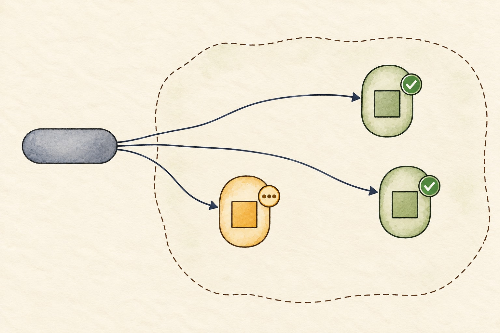

Chapter 1: six new visual moments
Generated illustration candidates. All screen, code and checklist wording remains editable. This review has not changed the website reader or PDF.
git blame · Chapter 1 · Panel 2 · Artwork review
One click before the weekend
- checkout-api
- Deploy
git blame · Chapter 1 · Panel 4 · Artwork review
Green replacements, unfinished departure

- ALB
- EKS · checkout-api
- Old pod · terminating Old work may still be active.
- New pods · ready 2/2 replicas
git blame · Chapter 1 · Panel 5 · Artwork review
Meanwhile, at checkout
- We couldn't confirm checkout.
git blame · Chapter 1 · Panel 9 · Artwork review
Alex recognizes the goodbye handler
-
process.on('SIGTERM', () => { process.exit(0); });
git blame · Chapter 1 · Panel 11 · Artwork review
Make the slow request overlap shutdown
- In test
- Accepted request completes
- Shutdown waits, then exits
git blame · Chapter 1 · Panel 13 · Artwork review
One watched production handoff
- Corrected replicas healthy
- New traffic shifted
- Old accepted work complete
- Old processes retired